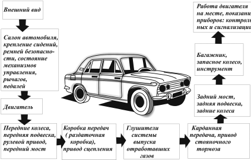

Рекомендации по техническому обслуживанию автомобиля.
Ежедневное техническое обслуживание включает в себя осмотр перед выездом из гаража, заправку, контроль над работой агрегатов, обслуживание автомобиля после возвращения в гараж.
Сначала осматривают шины, проверяют состояние зеркал, номерных знаков и подвески. Затем контролируют действие приборов освещения и световой сигнализации, звукового сигнала, снегоочистителей, систем вентиляции, отопления, проверяют свободный ход рулевого колеса, герметичность гидравлического привода сцепления. Контроль завершают проверкой контрольно-измерительных приборов и систем автомобиля. Проверяют также, не «проваливается» ли тормозная педаль, то есть исправен ли гидравлический привод рабочей тормозной системы. Осмотр места стоянки дает возможность обнаружить подтекание масла, топлива, охлаждающей жидкости. Последовательность проведения осмотрана приведена на рисунке 26.

Рис. 26.
После возвращения автомобиля в гараж проверяют уровень масла в картере двигателя, жидкости в системе охдаждения, топлива в баке. Обнаруженные неисправности устраняют и, если нужно, автомобиль дозаправляют. Все эти операции необходимо выполнять если не ежедневно, то через каждые 500–700 км пробега.
Техническое обслуживание автомобиля включает в себя проверочные, регулировочные и смазочные работы, а также замену определенных деталей, которые производятся периодически, через определенный период времени и пробег автомобиля.
Один раз в год или примерно после 10–15 тыс. км пробега следует:
заменить масляный фильтр и масло в картере двигателя; проверить уровень масла в коробке передач; проверить состояние и натяжение ремня привода генератора; проверить уровень и плотность электролита в аккумуляторной батарее, ее крепление и прочистить вентиляционные отверстия в пробках; проверить работу генератора, освещение, световую и звуковую сигнализацию, контрольные приборы, отопитель, стеклоочистители, омыватели, систему зажигания; обогрев заднего стекла; уровень охлаждающей жидкости; проверить герметичность систем охлаждения; питания и гидравлического привода тормозов; состояние шлангов и трубок;
проверить наличие сколов и трещин, а также очагов коррозии лакокрасочного покрытия кузова, повреждений мастики арок колес и днища, работу замков дверей и капота; проверить состояние элементов передней и задней подвесок, их резиновых и резинометаллических шарниров, втулок и подушек; состояние рулевых тяг и их защитных колпачков; защитных чехлов рулевого механизма, приводов колес, шаровых пальцев; состояние шарниров и защитных чехлов тяги переключения передач; состояние защитных чехлов направляющих пальцев переднего тормоза;
переставить колеса; отбалансировать колеса; проверить наличие посторонних стуков и шумов двигателя, сцепление, коробки передач, валов привода передних колес;
проверить люфт и состояние демпфера рулевого колеса; установку момента зажигания; проверить и очистить свечи зажигания; проверить исправность работы узлов и деталей гидрокорректора фар; работу экономайзера принудительного холостого хода пускового устройства, карбюратора и терморегулятора воздушного фильтра;
проверить эффективность работы передних тормозов и состояние колодок передних тормозов; регулировку стояночного тормоза и свободный ход педали тормоза; проверить ремень тормозной жидкости; состояние зубчатого ремня привода механизма газораспределения; отрегулировать натяжение зубчатого ремня привода механизма газораспределения; очистить фильтрующий элемент воздушного фильтра; проверить герметичность топливной системы; уровень масла в картере ведущего моста; прочистить дренажные отверстия порогов и дверей; смазать петли дверей; удалить воду из топливного фильтра дизельного двигателя.
Один раз в два года или примерно после 20–30 тыс. км пробега необходимо выполнить следующие операции технического обслуживания:
заменить свечи зажигания новыми; подтянуть крепления агрегатов, узлов и деталей шасси и двигателя; проверить герметичность уплотнений узлов и агрегатов; зачистить и смазать выводы и зажимы аккумуляторной батареи; заменить фильтр тонкой очистки топлива; промыть и продуть детали карбюратора, фильтры карбюратора и топливного насоса;
проверить и при необходимости отрегулировать уровень топлива в поплавковой камере; отрегулировать обороты холостого хода с контролем токсичности отработавших газов; проверить элементы электронной системы впрыска и произвести замену сменных элементов по аналогии с карбюраторной системой; проверить свободный ход на рычаге вилки включения сцепления или ход педали сцепления; проверить работоспособность регулятора давления;
очистить и промыть детали системы вентиляции картера; отрегулировать зазоры в газораспределительном механизме; отрегулировать, если нужно, зазоры в подшипниках ступиц колес; проверить эффективность работы задних тормозов;
смазать трущиеся участки ограничителя открывания дверей, шарнир и пружину, крышки люка топливного бака, замочные скважины, пробки наливной горловины топливного бака и дверей; покрыть антикоррозионным материалом внутренние полости кузова; заменить топливный фильтр дизельного двигателя; смазать шлицевое соединение карданного вала со стороны эластичной муфты; проверить уровень масла в бачке привода сервосистемы.
Один раз в три года или примерно после 35–45 тыс. км пробега нужно выполнить следующее:
промыть систему смазки двигателя; заменить масло в автоматической трансмисси; заменить масло в картере ведущего моста; зачистить коллектор стартера, проверить износ и прилегание щеток; очистить и смазать детали привода стартера;
проверить работоспособность вакуумного усилителя тормозов; отрегулировать направление световых пучков фар.
Один раз в четыре года или примерно после 50 60 тыс. км пробега следует выполнить следующие операции технического обслуживания: заменить охлаждающую и тормозную жидкость;
зачистить контактные кольца генератора;
проверить износ и прилегание щеток.
Один раз в пять лет или примерно после 60–75 тыс. км пробега необходимо:
заменить масло в коробке передач и зубчатый ремень привода механизма газораспределения.